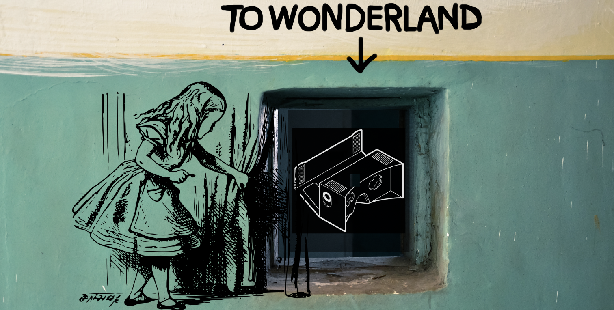

A Practical Introduction
to Virtual (and Augmented) Reality
Modelling. Virtual. Realities.
Dr. Jan G. Wieners & Zoe Schubert MA
Institute for Digital Humanities, University of Cologne, Germany
Digital Humanities Summer Institute 2019
University of Victoria, Canada
Overview
Hello World!
Roadmap
Objective

Jan G. Wieners, PhD
- Digital Humanities | University of Cologne
- Research
#ai #cognitive-mapping #from-text-to-2d-3d
[Background]
Philosophy, German Language Studies, Applied Computer Science / Digital Humanities
– Theatre in Virtual Reality
[2018]
Working as a programmer at the German Archaeological Institute
-
Work
PostDoc, lecturer and software developer, Institute of Digital Humanities, University of
Cologne
Zoe Schubert
- Digital Humanities | University of Cologne
- Research
#media #culture #theatre #cinema #3D #VR #modeling #visualization #programming
[Dissertation Working Title]
Virtual reality as transformative
technology in the humanities
– Theatre in Virtual Reality
[Supervision]
Prof. Dr. Øyvind Eide & Prof. Dr. Manfred Thaller
-
Work
Research Associate, Institute of Digital Humanities, University of Cologne
What brought us together?
One Gate to enter VR
Smartphone
+ Cardboard
+
Website with WebVR
Course overview
- Day 1 -- Welcome, Introduction & Webbasics
- Day 2 -- Defining projects & Setting up VR
- Day 3 -- 3D Modelling & virtual Spaces
- Day 4 -- Practical work
- Day 5 -- Final
Monday (4:30h)
- Welcome!
- Introduction
- Learning Goals
- WebXR: Technology Stack
- Web Technologies Refresh (HTML5, CSS, JS, TypeScript)
- Basic WebVR Scene With A-Frame
Tuesday (5:30h)
- Loading externel 3D models
- A-Frame and it's restrictions
- BabylonJS
- Object interaction
- Create a basic 3D model on your own and load display it in the web browser
Wednesday (5:30h)
- Create your own WebVR project
- Software Development, the agile way
- Requirements Analysis
- BabylonJS hands-on
Welcome: Session #1
Roadmap June 03 2019
- Hello World!
- Teaching VR and AR
- WebGL, WebXR project work
- Roadmap for this course week
- Introduction to WebXR, libraries and frameworks
- First steps
- Working with an (your) IDE
- Creating a browser-/web-based VR application
How to achieve this
- Theorie
- Praktische Beispiele:
Erklärung/ Anleitung durch Vorführung &
anschließendes Ausprobieren
- Eigenständig arbeiten und Aufgaben lösen
- Projektarbeit ≙ Ergebnis der Einzelaugaben
und
- Film d. 3D Arbeit mit Kamerafahrt und Animation
oder
- 3D Druck